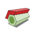

QUDYMA
Quantum dynamics is the motion of electronic or other quantum degrees of freedom in non-equilibrium conditions. In a material, quantum dynamics controls the response of said material to perturbations. When the perturbations are weak, the response is connected to the quantum fluctuations around its equilibrium structure, a fact that constitutes the backbone of linear response theory. When perturbations are strong, however, equilibrium properties cannot help us to understand the response. We then need to resort to more powerful techniques based on real-time quantum evolution. The physical behaviors that emerge are complex, and often exhibit fascinating fingerprints of the quantum nature of the dynamics. In the QUDYMA group we specialise in the exploration of the response of quantum materials, with a focus on low-dimensional systems, when pushed aways from equilibrium. Our projects often start by developing a solid understanding of equilibrium structure, described with a variety of tools that include ab-initio approaches and effective models. We can then perturb the system under study using the large toolbox of numerical and analytic techniques at our disposal, most of them developed in-house. The development of these tools is also an important part of our research activity. Notable fields of study of interest to us include attosecond science in 2D materials, out-of-equilibrium superconductivity, topological materials and computational dynamics.
Our work in the field of attosecond science explores processes at attosecond timescales involving quantum degrees of freedom in condensed matter systems. By understanding these processes we aim to unveil ways to control the properties of quantum materials (e.g., 2D layers and heterostructures, topological insulators, strongly-correlated systems, etc.) at these ultrashort times. In this domain, the tool of choice is strong laser fields, which can drive crystals to a highly non-equilibrium regime. New transient properties emerge in this regime, which can be measured with attosecond-resolved optical techniques such as high-harmonic generation and transient absorption spectroscopy. By controlling the form of the lightwave on a sub-cycle timescale, we steer the coherent electron motion, manipulating quantum properties on few-femtosecond timescales, i.e., faster than the typical dephasing mechanisms at room temperature. Main line leaders: Alvaro Jimenez-Galán, Antonio Picón and Rui Silva
Out-of-equilibrium superconductivity
Controlling electronic motion using light on attosecond timescales is just one extreme example of quantum electron dynamics. Many other quantum dynamical phenomena of fascinating complexity and promising applications can be found in condensed matter systems. One instance of particular interest to us is out-of-equilibrium superconductivity. In superconducting systems, electrons form a superconducting condensate that is endowed with a macroscopic quantum-mechanical phase. It is responsible for spectacular phenomena, such as supercurrents and magnetic levitation. In time-dependent scenarios, this phase becomes a dynamic degree of freedom, like e.g. in the ac-Josephson effect. We explore the interplay of external driving, the condensate and the electronic quasiparticles in out-of-equilibrium superconducting systems, with a particular eye on topological effects. The typical timescales of superconductor dynamics are very different from those of attosecond physics, but the underlying theoretical formalism (real-time Keldysh Green functions) is similar. We use this fact to explore connections between these fields. Main line leaders: Elsa Prada and Pablo San-Jose

Hybrid nanostructures and topological superconductivity
Topological materials, topological superconductors, hybrid nanostructures, full-shell nanowires. Main line leaders: Elsa Prada and Pablo San-Jose
TEXT Main line leaders: Elsa Prada and Pablo San-Jose